Big data
July 1, 2016
Medium data
July 1, 2016
http://bedford.io/projects/medium-data/
Data tells a story
Charles Minard and Napoleon's 1812 campaign

The EPAS1 gene and high-altitude adaptation in Tibetans
Tibet is high

Tibetans are adapted to high altitudes
- ~600,000 people live at 14,800+ ft in elevation, where oxygen is only 60% of sea level
- Among other traits, Tibetans are protected from chronic mountain sickness, exhibiting little increase in hemoglobin concentration at high altitudes
Tibetan EPAS1 is diverged from other populations

Tibetan EPAS1 is diverged from other populations

EPAS1 is a transcription factor involved in the body's response to oxygen level
Story was in situ adaptation in Tibetans to high altitude
Tibetan EPAS1 derives from Denisovan DNA

Denisovans?
Evolutionary relationships between human species

Extinction of Neanderthals and Denisovans


Relatedness between modern and archaic populations
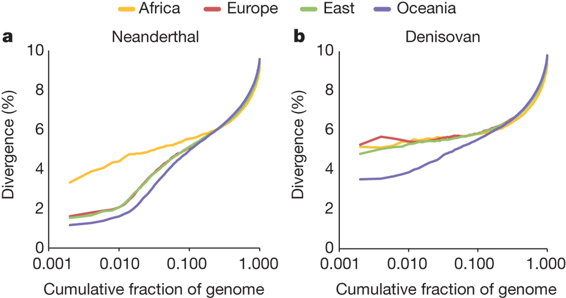
Working with data
Step 1. Download data from public repository
For example, fludb.orgStep 2. Clean up data and get it into a proper format
strain date date_decimal date_precision region country general_location specific_location source accession sequence
A/Alabama/WRAIR1242P/2009 2009-02-01 2009.085 day USACanada USA Alabama Alabama IRD CY093263 AACGCTGTGCCTTGGGCACCATGCAGTACCAAACGGAACGATAGTGAAAACAATCACGAATGACCAAATTGAAGTTACTA
A/Alexandroupolis/99/2007 2007-02-15 2007.123 day Europe Greece Greece Alexandroupolis IRD EU716078 AACGCTGTGCCTTGGGCACCATGCAGTACCAAACGGAACGATAGTGAAAACAATCACGAATGACCAAATTGAAGTTACTA
A/Ashburton/280/2004 2004-10-12 2004.781 day Oceania NewZealand NewZealand Ashburton IRD CY002954 AACGCTGTGCCTTGGGCACCATGCAGTACCAAACGGAACGATAGTGAAAACAATCACGAATGACCAAATTGAAGTTACTA
A/Auckland/599/2000 2000-09-22 2000.726 day Oceania NewZealand NewZealand Auckland IRD CY023034 AACGCTGTGCCTGGGGCACCATGCAGTGCCAAACGGAACGCTAGTGAAAACAATCACGAATGACCAAATTGAAGTGACTA
A/Australia/34/2009 2009-07-24 2009.559 day Oceania Australia Australia Australia IRD CY080555 AACGCTGTGCCTTGGGCACCATGCAGTACCAAACGGAACGATAGTGAAAACAATCACGAATGACCAAATTGAAGTTACTA
A/Austria/211557/2005 2005-03-01 2005.162 day Europe Austria Austria Austria IRD EU106666 AACGCTGTGCCTTGGGCACCATGCAGTACCAAACGGAACGATAGTGAAAACAATCACGAATGACCAAATTGAAGTTACTA
A/Bahia/100/2011 2011-03-24 2011.225 day SouthAmerica Brazil Brazil Bahia IRD CY099978 AACGCTGTGCCTTGGGCACCATGCAGTGCCAAACGGAACGATAGTGAAAACAATCACGAATGACCAAATTGAAGTTACTA
A/Bangladesh/C5_12/2003 2003-XX-XX 2003.0 year India Bangladesh Bangladesh Bangladesh IRD DQ179512 AACGCTGTGCCTTGGGCACCATGCAGTACCAAACGGAACGATAGTGAAAACAATCACGAATGACCAAATTGAAGTTACTA
A/Beijing/12611/2010 2010-11-01 2010.833 day NorthChina China Beijing Beijing Russell NA AACGCTGTGCCTTGGGCACCATGCAGTACCAAACGGAACGATAGTGAAAACAATCACGAATGACCAAATTGAAGTTACTA
...
Step 3. ?????
Step 3. Stastistically process data to generate inferences
Use phylogenetics to infer evolutionary relationships.
7 2664 2668 2669 2685 2747 2752 2753 2755 2756 2744 2745 2741 2739 2727 2634 180 77 78 254 303 2621 2606 2617 320 343 356 373
0 8 9 10 244 304 305 306 315 357 390 400 419 457 458 504 535 573 593 607 623 645 868 869 871 872 873 874 878 934 935 936 937
3->0 7->3 8->0 2642->8 2643->2642 2644->2643 2656->2644 2657->2656 2662->2657 2664->2662 2666->2656 2667->2666 2668->2667 266
0->India 3->Europe 7->SoutheastAsia 8->USACanada 2642->Europe 2643->USACanada 2644->Europe 2656->USACanada 2657->Europe 2662
0->{1997.685450,5.683161} 3->{1999.233555,0.000000} 7->{2000.085000,0.000000} 8->{1998.544642,11.366322} 2642->{1999.114123,
7->A/BANGKOK/62/2000 2664->A/BANGKOK/86/2001 2668->A/BANGKOK/178/2000 2669->A/BANGKOK/202/2000 2685->A/SINGAPORE/2/2000 2747
0->{0.000000,0.000000} 3->{0.000000,0.000000} 7->{0.000000,0.000000} 8->{0.000000,0.000000} 2642->{0.000000,0.000000} 2643->
Step 4. PROFIT!!!
Step 4. Make cool figures
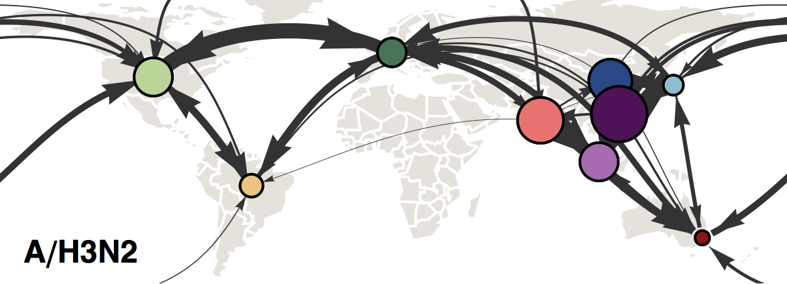Flu phylogeny shows how viruses are related to one another
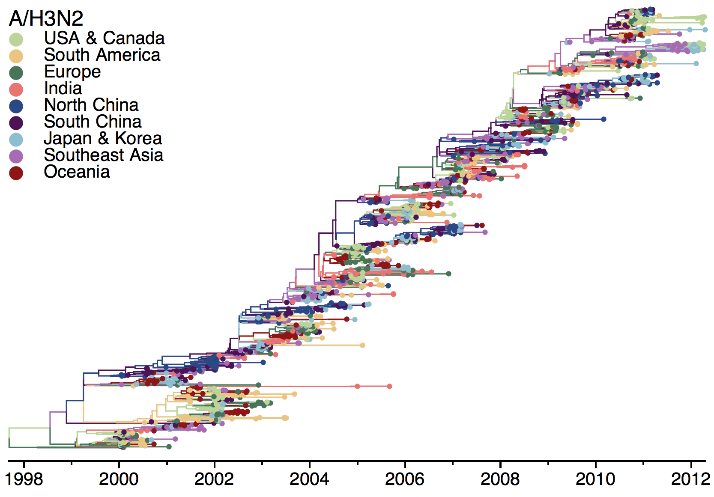USA viruses tend to be evolutionary dead-ends
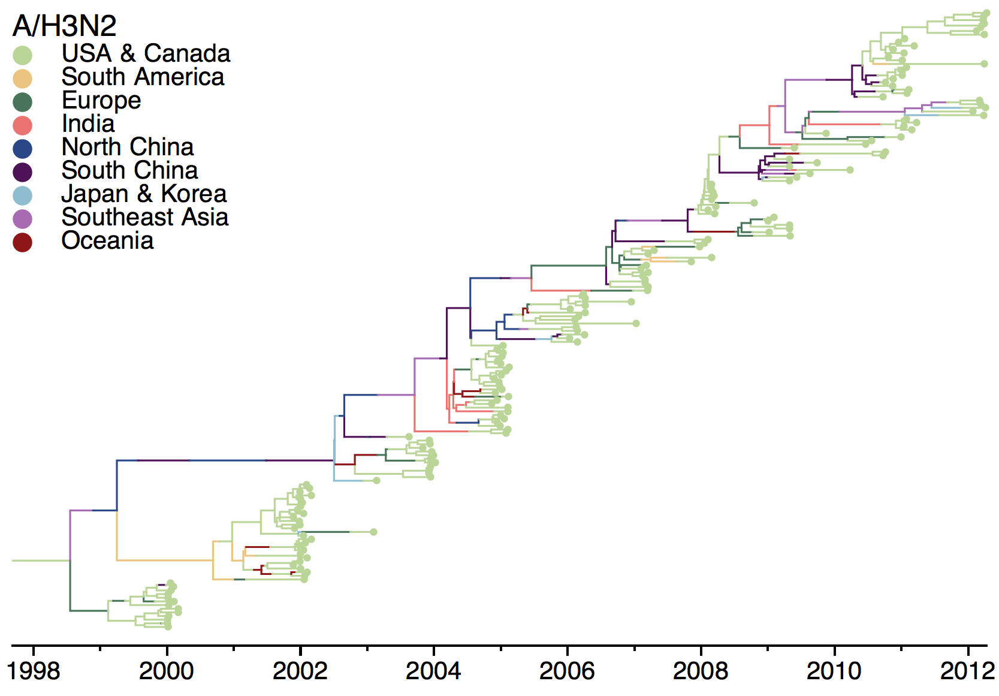Chinese viruses tend to be evolutionary starting points
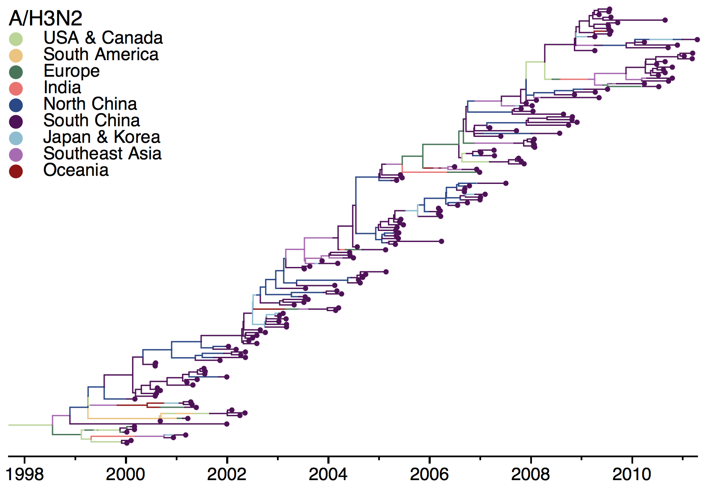Viruses trace their origins primary to China, India and Southeast Asia
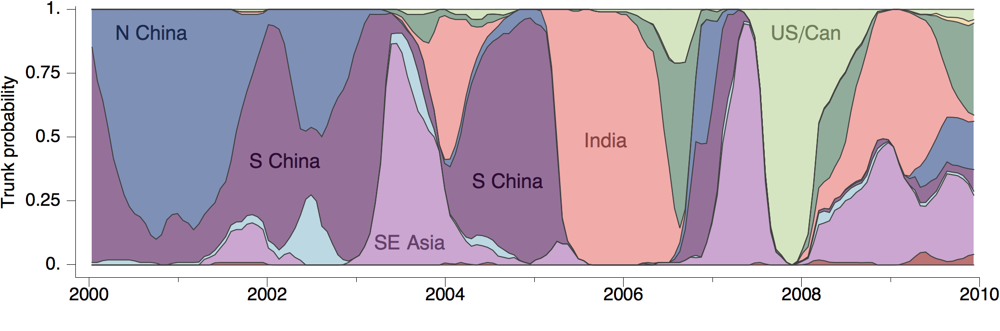If data is looked at in the right way, answers become immediately clear
Edward Tufte


Above all, show the data
A good graphic is honestBarchart of average value
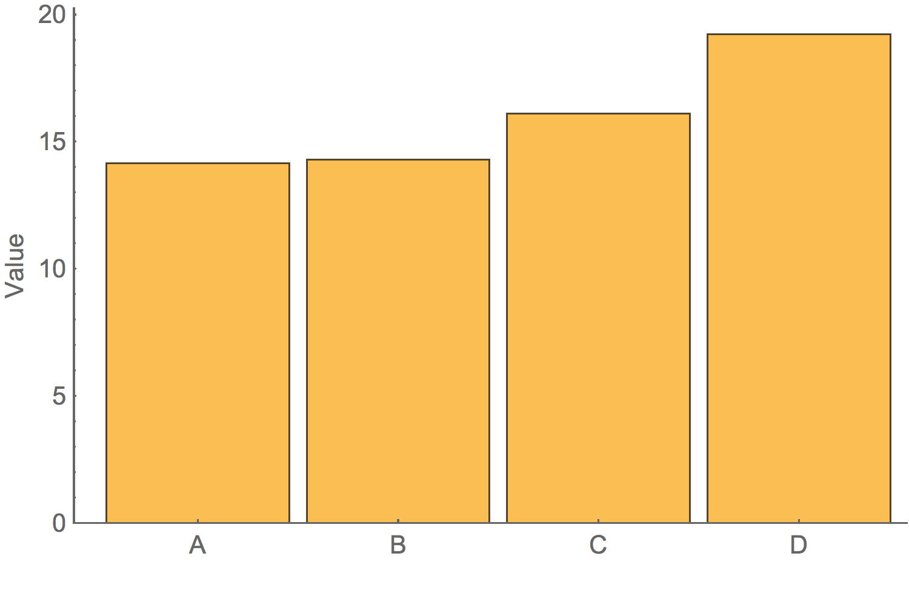Box-and-whisker plot showing variation
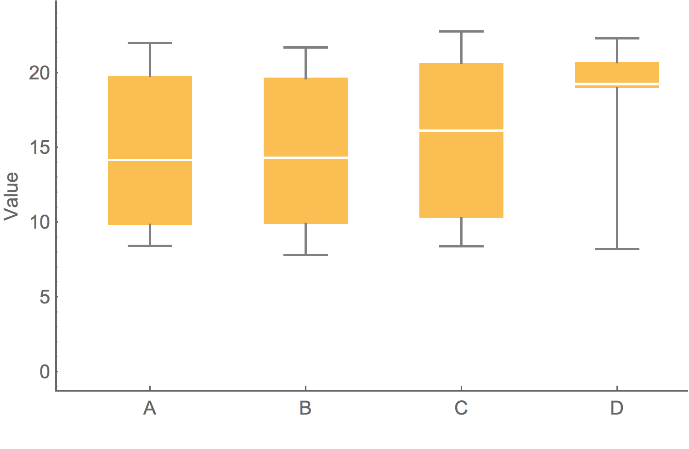Showing the data
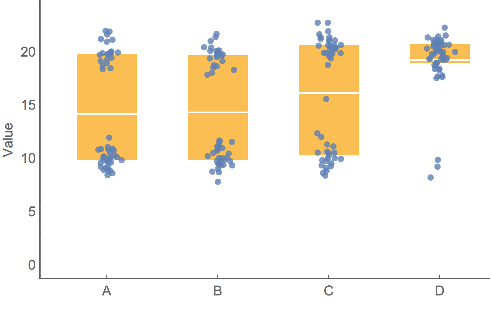To clarify add detail
"To clarify, add detail... Clutter and overload are not attributes of information, they are failures of design. If the information is in chaos, don’t start throwing out information, instead fix the design."– Tufte
Evolution of Conus shells

Greenland rising

Small multiples and dimensionality

Mapping infection spread
John Snow and the founding of epidemiologyGlobal pandemic spread

Geographic distance does not describe pandemic spread
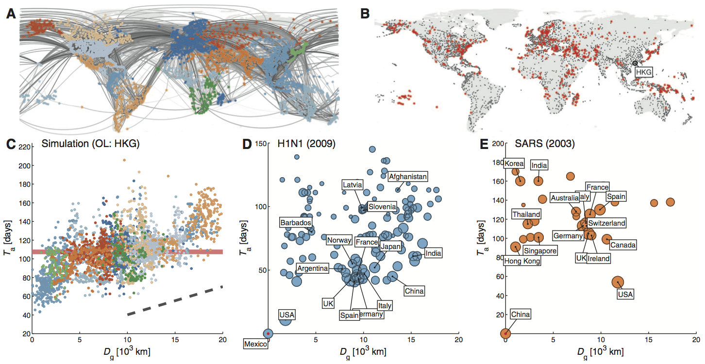Shortest network path captures pandemic spread
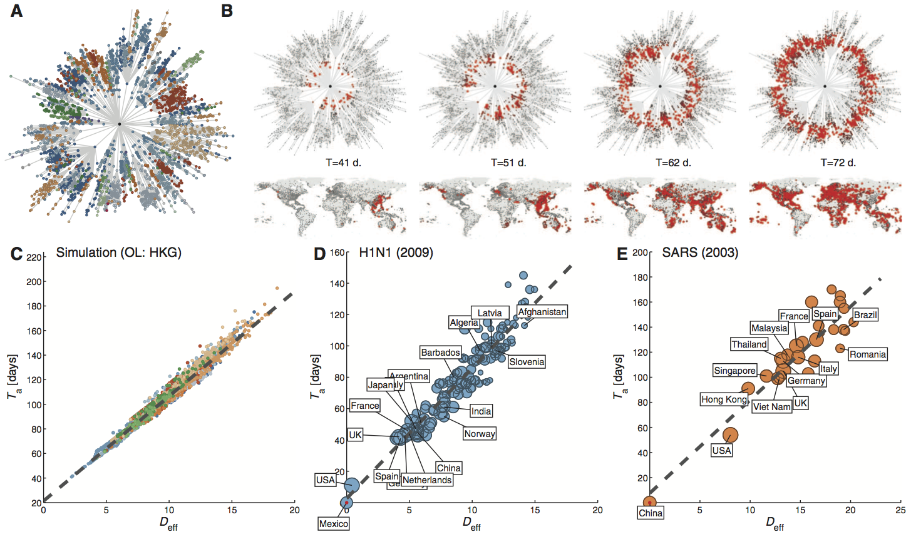Predict almost exactly when zombie invasion will arrive
(except zombies don't get on planes. Nvm...)
Animating evolution of trees

Animating evolution of haplotypes